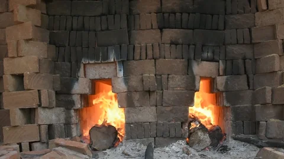
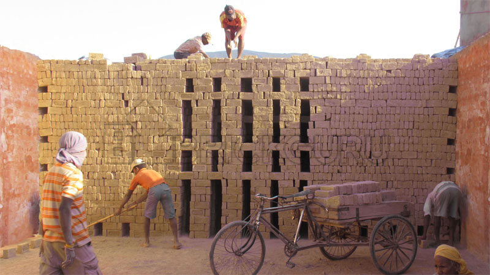

Preparation of raw materials: The main ingredients used to make bricks are clay and sand. These raw materials are obtained from nearby pits and mixed in the right proportions to create the desired quality of brick.
Moulding: The clay and sand mixture is then moulded into brick shapes using a brick mould. This process can be done either manually or by using a machine.
Burning: The dried bricks are then burned in a kiln at high temperatures to make them stronger and more durable. The temperature and duration of the burning process is carefully controlled to produce the desired quality of brick
Cooling: After burning, the bricks are left to cool for several hours. Once cooled, they are sorted and stacked for transportation.
